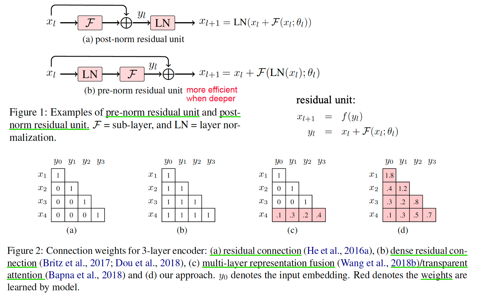
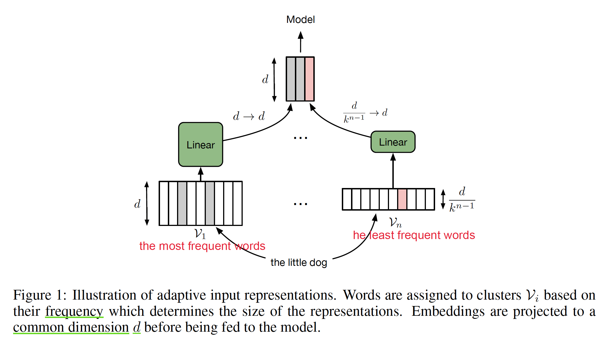
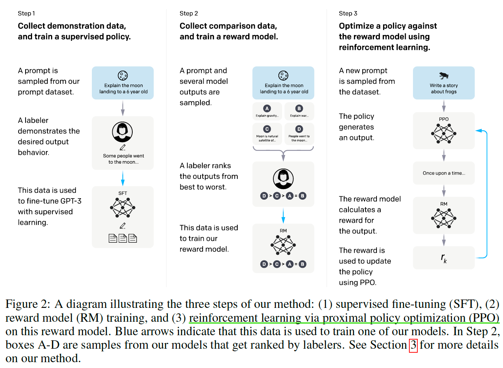
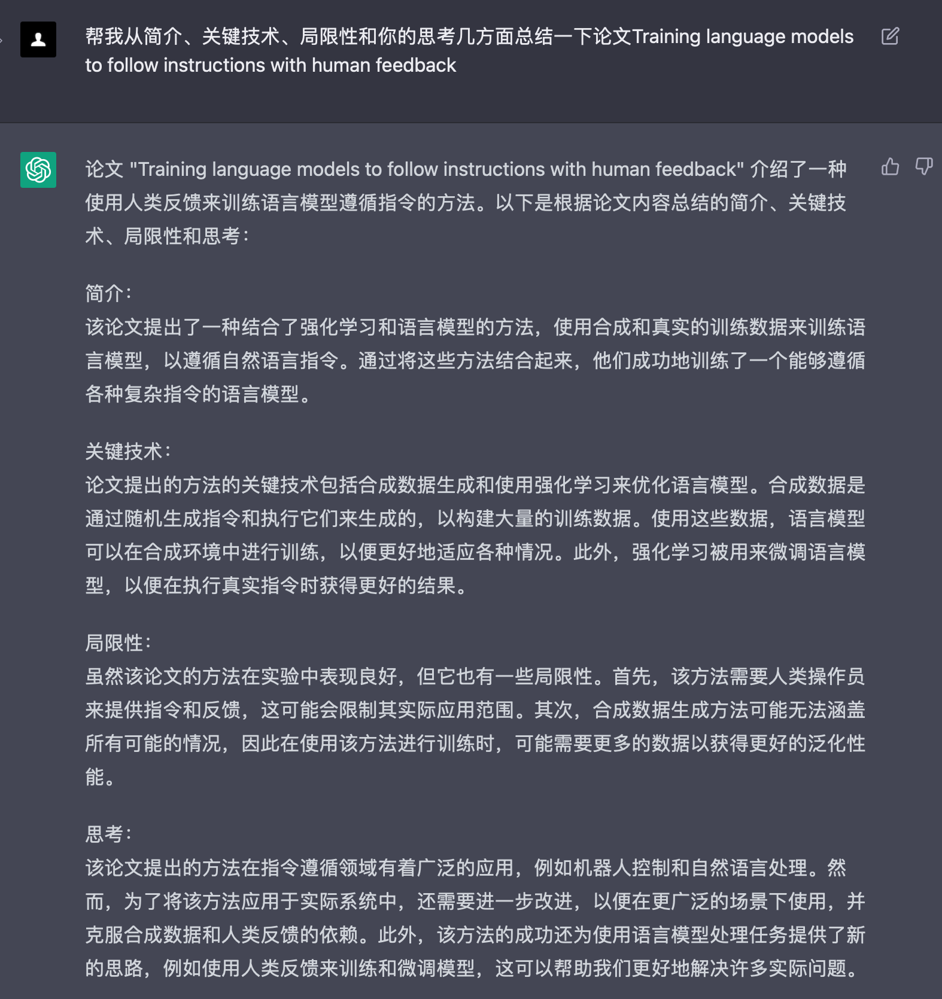
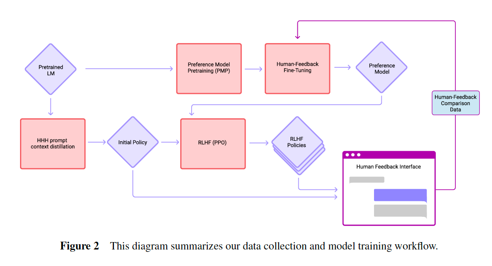
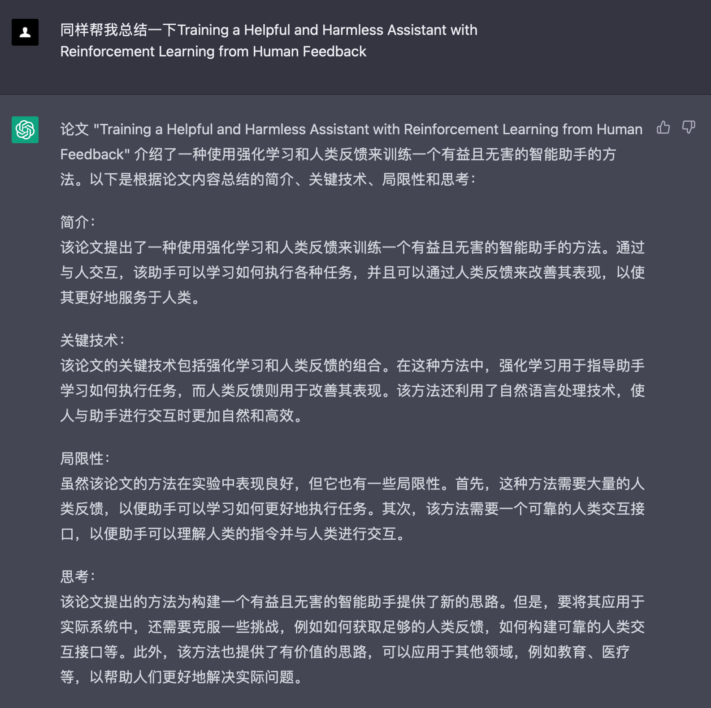
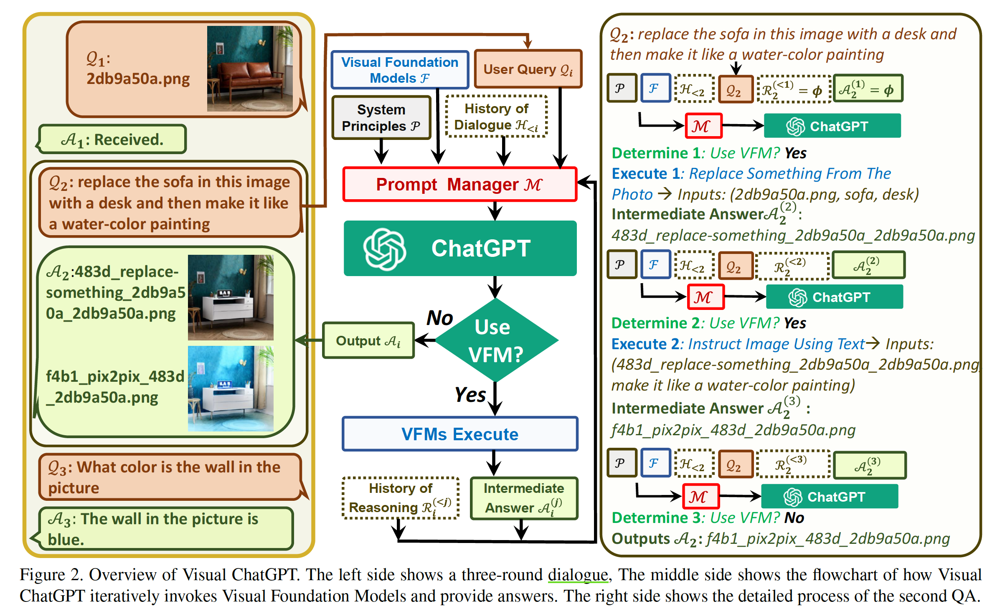
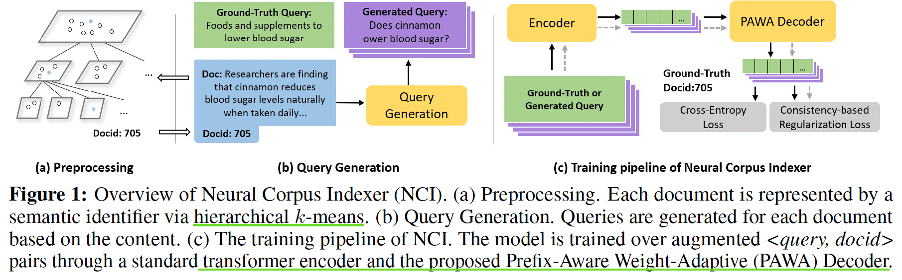
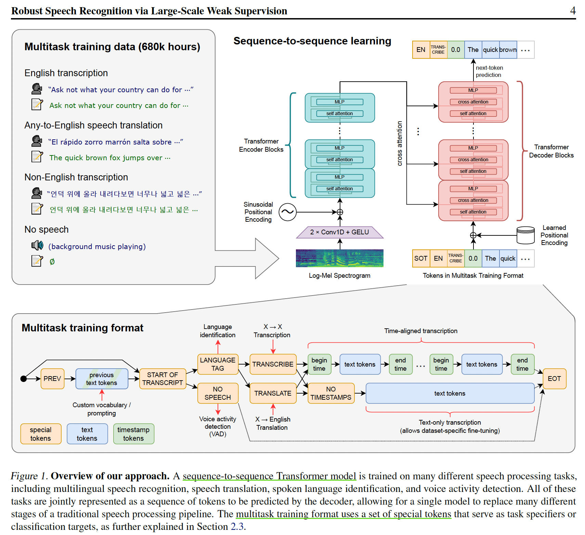

Papers Reading about NLP
阅读大纲
| NLP | Adaptive input & DLCL | 23-03-23 |
| NLP: Language Model | HELM | 23-02-06 |
| InstructGPT, Anthropic_LLM | 23-03-12 | |
| Visual ChatGPT | 23-03-17 | |
| NLP: Retrieval | Neural Corpus Indexer | 22-12-21 |
| NLP: Audio | Whisper | 22-11-17 |
NLP
Learning Deep Transformer Models for Machine Translation
- 【ACL2019】 ArXiv Code
- 简介：原始的Transformer的encoder层>12时很难训练。针对机器翻译任务，本文加入两个技巧（pre-LN和动态线性结合残差连接）训练更深层的Transformer，使模型参数更少训练更快
- 关键技术：
- 相较于原始Transformer的Post-norm，使用Pre-norm可以减少梯度反传计算量，训练更高效
- 使用动态线性结合层（DLCL）代替传统的残差连接，用可学习的权值计算历史记忆的连接
- 更早的层连接更稠密，层深越深连接变得稀疏
- 距离输出层最近的连接权值越高
- 不同层的权值动态变化
- 思考：不一定专注模型创新，把小的tricks灵活修改做足实验也是好work

Adaptive Input Representations for Neural Language Modeling
- FAIR【ICLR2019】 ArXiv Code
- 相关Paper:《Efficient softmax approximation for GPUs》FAIR【ICML2017】Arxiv Code
- 简介：在自适应softmax基础上，提出了神经网络语言模型的自适应输入表示，使得网络参数更少且训练更快
- 关键技术：如果输出层使用与自适应输入表示相同参数(V, k, d)的自适应softmax，可以通过参数共享进一步减少参数，还可以共享减少容量的线性变化参数
- 参考：Adaptive Softmax; Adaptive Input

NLP - Language Model
Holistic Evaluation of Language Models
- ArXiv
- 简介：全面的语言模型评测，针对现有语言模型的评测内容包括：核心场景、通用评价标准、针对性评估、模型、适用性等（要有钱有人力有人脉）
- 关键技术：
- 先对语言模型分类，补充标准语言模型对各类模型的评价（准确率、校准、鲁棒性、公平性、偏见、有毒性、效率）
- 实验发现：InstructGPT davinci v2(175B*)综合表现最好；未开源的模型效果比开源模型效果好得多；所有模型对Prompting有很大的敏感性；模型越大效果越好
- Limitation：场景、评价标准、适用性不全等
- 参考：沐神论文精读

Training language models to follow instructions with human feedback


Training a Helpful and Harmless Assistant with Reinforcement Learning from Human Feedback


Visual ChatGPT: Talking, Drawing and Editing with Visual Foundation Models
- Microsoft ArXiv
- 简介：联合不同的视觉基础模型（VFM）使得ChatGPT可以处理复杂的视觉任务
- 关键技术：
- 包含22个不同VFMs的Prompt Manager使得ChatGPT更好的交互和结合处理图像任务
- 复杂的Zero-shot实验验证了模型的优越性
- Limitation：依赖ChatGPT和VFMs的结合；需要大量大的Prompt工程；实时性不好；限制于ChatGPT的token的长度；安全和隐私

NLP - Retrieval
A Neural Corpus Indexer for Document Retrieval
- 【NeurlIPS2022】ArXiv
- 简介：基于Transformer的sequence-to-sequence架构，给定qurey生成相关文档id
- 关键技术：
- 和DSI一样，是端到端的文档检索模型
- prefix-aware weight-adaptive (PAWA) 解码器生成文档id
- 基于对比学习的一致性正则损失
- Limitation：模型过大不利于部署；检索速度有待提高；model-based难以进行新文档更新
- 参考：沐神论文精读

NLP - Audio
Robust Speech Recognition via Large-ScaleWeak Supervision
- OpenAI Arxiv
- 简介：基于Transformer通过大尺度弱监督学习自动语音识别（ASR，Automatic Speech Recognition）模型，模型可以不微调直接进行zero-shot迁移。
- 关键技术：
- 数据预处理：从网络上收集了68万小时的多语言（98 种语言）和多任务（multitask）监督数据对Whisper进行了训练。预处理使用了三种自动过滤方法：检测并删除机器生成的转录；使用语音检测器确保语言和转录匹配；识别并删除低质量数据。
- 模型：基于encoder-decoder的Transformer架构，其中解码器通过训练不同特殊的token识别单个任务，以此实现多任务统一训练。
- Limitation：由于使用现成的Transfomer架构并没有进行过多改进，会出现错误结果。可以对现有模型的解码策略、微调、正则化、数据增强、数据多样性、增加预训练等进行改进。
- 参考：沐神论文精读 知乎

All articles in this blog are licensed under CC BY-NC-SA 4.0 unless stating additionally.
Related Articles


Comment